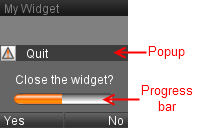

Warning:
This tutorial covers only Tiny Mobile Widgets versions.
On Mobile Widgets, use Loader,
LoaderMini or
ProgressBar prototype.
This chapter present the Tiny Mobile Widgets propress bar.
Tiny Mobile Widgets provide a progress bar component. Developer can display this progress bar into popup.

Note:
Progress bar require popup.
See popup tutorial to display and use popup.
Tiny Mobile Widgets progress bar is displayed via a Message on the "Board" channel.
Note:
Popup is required to display progress bar (see popup tutorial).
We create a popup to ask if user would quit widget.
We close popup after 5 seconds.
A progress bar displays the time left before closing popup.
Note:
We use a TimeSensor node.
Define TimeSensor node. TimeSensor interval is 5 secondes.
And declare TimeSensor node in script node.
Link TimeSensor node and hide popup function.
"cycleTime" event return a SFTime value.
Change hidePopup event type to SFTime.
Launch TimeSensor when popup is opened.
To launch TimeSensor, we active
the TimeSensor and we define the
start time to current time.
Note:
current time is a "data_changed" function parameter
TimeSensor return progression with fraction_changed event (return a SFFloat value).
In JavaScript, we add an event to catch fraction_changed.
We would change progress bar when TimeSensor send fraction_changed event.
Note:
fraction_changed return a value between 0 and 1. Progress bar use value between 0 and 100.